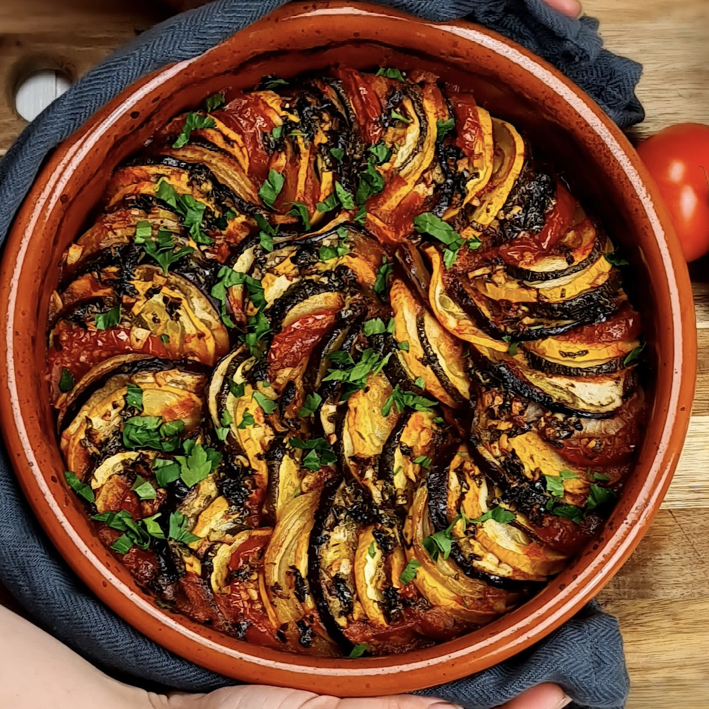
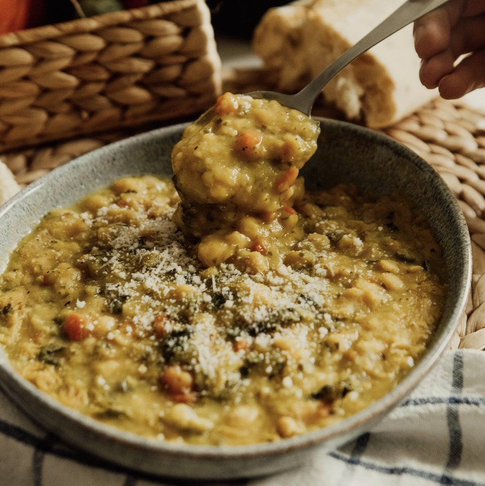

Everyone looking for delicious and easy recipes has come to the right place! I make other people’s dishes from other blogs and post about my experiences on my website. By doing this, you guys can know in depth if a certain recipe is truly the best.
New Recipes
Classic and decadent, cinnamon rolls are one of my all-time favorite desserts to make and eat.
Layered vegetable ratatouille is an amazing comfort dish. Strong basil and oregano flavors create a fresh take on a classic dish.

Bright pesto pasta is an easy 15 minute recipe. Any shape pasta with a bright and creamy pesto sauce coating and nutty vegan parmesan topping.
An easy recipe to clean out any veggies in your refrigerator. Protein packed and heartwarming. Perfect for a rainy fall day.
My name is Olivia and I love to cook and bake! I am also vegan. I live in Northern Virginia, about 45 minutes from Washington D.C., where I love to be outside and take in all of the greenery.